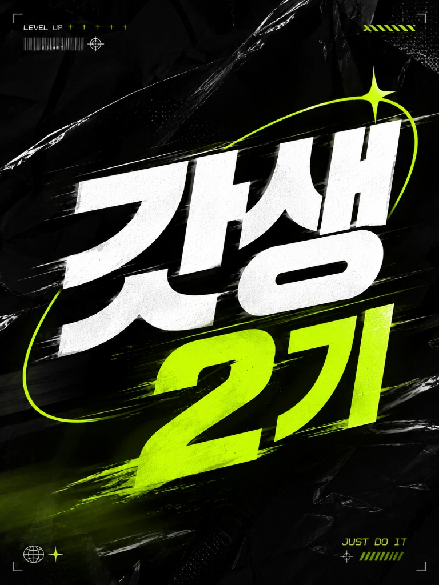

운동, 공부, 취미, 문화생활 등 요즘 시간을 쓰고 있거나 관심 가는 걸 편하게 적어주세요.
예: 운동 시작하기 / 책 읽기 / 자격증 공부 / 새로운 취미 배우기
거창하지 않아도 좋아요.
예: 주 1회 운동 / 출퇴근하면서 영어 공부 / 자기 전에 책 읽기
작은 버킷리스트처럼 적어주세요 :)
예: 러닝 / 전시 / 등산 / 독서 / 원데이클래스 / 맛집 탐방
예: 주 2회 운동하기 / 책 한 권 읽기보다 ‘30페이지 읽기’처럼 작아도 좋아요.
이 모임에서 해보고 싶은 것, 기대하는 것 등 자유롭게 적어주세요.
게으른 완벽주의자들의 모임에 오신 걸 환영합니다.
작성해주신 꼼꼼한 답변 감사합니다!
조만간 연락 드릴게요.